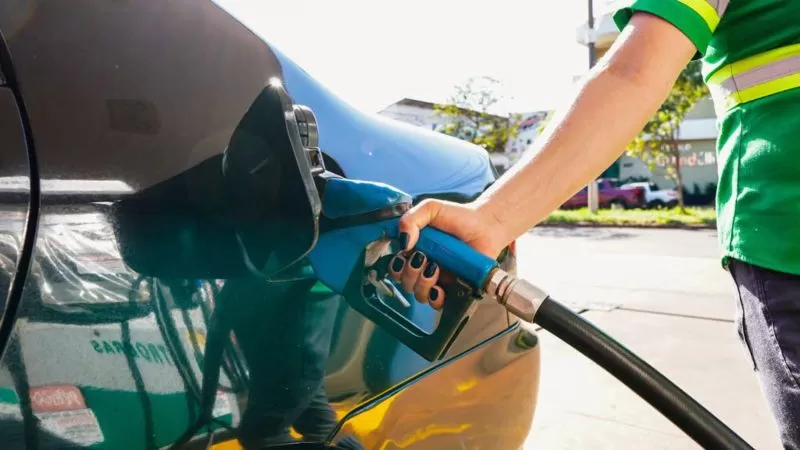
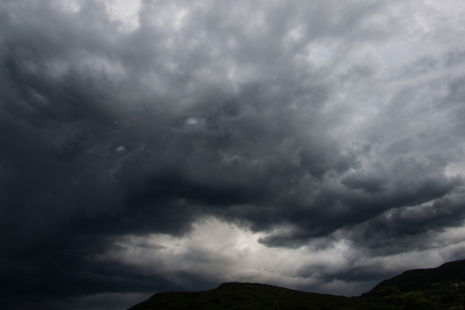

Populares
Com primeira taça no Inter Miami, Messi se isola como o jogador
com mais títulos do futebol; veja ranking
Em Esportes
Notícias gerais
- Hoje
- Semana
- Mês

A gasolina vai ficar mais barata? 5 perguntas sobre a mudança de política de preços da Petrobras
BBC •
posted day...
O preço dos combustíveis deve variar menos com a nova política de preços da Petrobras, mas isso não significa que ele vai ficar mais barato necessariamente, avaliam analistas ouvidos pela BBC News Brasil.
A estatal anunciou na terça-feira (16/5) a mudança nas regras, que desde 2016 seguiam de perto as oscilações do valor do petróleo no mercado internacional.

Brasileiros devem enfrentar eventos climáticos severos até a primavera
Globo Rural •
posted day...
Com El Niño ativo e outros tantos fenômenos meteorológicos acontecendo simultaneamente, entender as questões climáticas se faz cada vez mais urgente. E, segundo Willians Bini, meteorologista e head de comunicação da Climatempo, as variações no tempo vistas nos últimos dias devem permanecer nos próximos meses.

CEO da Amazon diz não ao trabalho remoto
Olhar Digital •
posted day...
O CEO da Amazon, Andy Jassy, assumiu uma posição firme em relação à política de retorno ao escritório da empresa, supostamente dizendo aos funcionários remotos que se não conseguirem “discordar e comprometer-se”, é improvável que tenham sucesso na Amazon.
A gasolina vai ficar mais barata? 5 perguntas sobre a mudança de política de preços da Petrobras
BBC •
posted day...
O preço dos combustíveis deve variar menos com a nova política de preços da Petrobras, mas isso não significa que ele vai ficar mais barato necessariamente, avaliam analistas ouvidos pela BBC News Brasil.
estatal anunciou na terça-feira (16/5) a mudança nas regras, que desde 2016 seguiam de perto as oscilações do valor do petróleo no mercado internacional.
A gasolina vai ficar mais barata? 5 perguntas sobre a mudança de política de preços da Petrobras
BBC •
posted day...
O preço dos combustíveis deve variar menos com a nova política de preços da Petrobras, mas isso não significa que ele vai ficar mais barato necessariamente, avaliam analistas ouvidos pela BBC News Brasil.
estatal anunciou na terça-feira (16/5) a mudança nas regras, que desde 2016 seguiam de perto as oscilações do valor do petróleo no mercado internacional.
A gasolina vai ficar mais barata? 5 perguntas sobre a mudança de política de preços da Petrobras
BBC •
posted day...
O preço dos combustíveis deve variar menos com a nova política de preços da Petrobras, mas isso não significa que ele vai ficar mais barato necessariamente, avaliam analistas ouvidos pela BBC News Brasil.
A estatal anunciou na terça-feira (16/5) a mudança nas regras, que desde 2016 seguiam de perto as oscilações do valor do petróleo no mercado internacional.